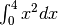
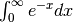

scipy.integrate.quad¶
- scipy.integrate.quad(func, a, b, args=(), full_output=0, epsabs=1.49e-08, epsrel=1.49e-08, limit=50, points=None, weight=None, wvar=None, wopts=None, maxp1=50, limlst=50)[source]¶
Compute a definite integral.
Integrate func from a to b (possibly infinite interval) using a technique from the Fortran library QUADPACK.
If func takes many arguments, it is integrated along the axis corresponding to the first argument. Use the keyword argument args to pass the other arguments.
Run scipy.integrate.quad_explain() for more information on the more esoteric inputs and outputs.
Parameters : func : function
A Python function or method to integrate.
a : float
Lower limit of integration (use -numpy.inf for -infinity).
b : float
Upper limit of integration (use numpy.inf for +infinity).
args : tuple, optional
extra arguments to pass to func
full_output : int
Non-zero to return a dictionary of integration information. If non-zero, warning messages are also suppressed and the message is appended to the output tuple.
Returns : y : float
The integral of func from a to b.
abserr : float
an estimate of the absolute error in the result.
infodict : dict
a dictionary containing additional information. Run scipy.integrate.quad_explain() for more information.
message : :
a convergence message.
explain : :
appended only with ‘cos’ or ‘sin’ weighting and infinite integration limits, it contains an explanation of the codes in infodict[‘ierlst’]
Other Parameters: epsabs : :
absolute error tolerance.
epsrel : :
relative error tolerance.
limit : :
an upper bound on the number of subintervals used in the adaptive algorithm.
points : :
a sequence of break points in the bounded integration interval where local difficulties of the integrand may occur (e.g., singularities, discontinuities). The sequence does not have to be sorted.
weight : :
string indicating weighting function.
wvar : :
variables for use with weighting functions.
limlst : :
Upper bound on the number of cylces (>=3) for use with a sinusoidal weighting and an infinite end-point.
wopts : :
Optional input for reusing Chebyshev moments.
maxp1 : :
An upper bound on the number of Chebyshev moments.
See also
- fixed_quad
- fixed-order Gaussian quadrature
- quadrature
- adaptive Gaussian quadrature
odeint, ode, simps, trapz, romb
- scipy.special
- for coefficients and roots of orthogonal polynomials
Examples
Calculate  and compare with an analytic result
>>> from scipy import integrate >>> x2 = lambda x: x**2 >>> integrate.quad(x2,0.,4.) (21.333333333333332, 2.3684757858670003e-13) >> print 4.**3/3 21.3333333333
Calculate 
>>> invexp = lambda x: exp(-x) >>> integrate.quad(invexp,0,inf) (0.99999999999999989, 5.8426061711142159e-11)
>>> f = lambda x,a : a*x >>> y, err = integrate.quad(f, 0, 1, args=(1,)) >>> y 0.5 >>> y, err = integrate.quad(f, 0, 1, args=(3,)) >>> y 1.5